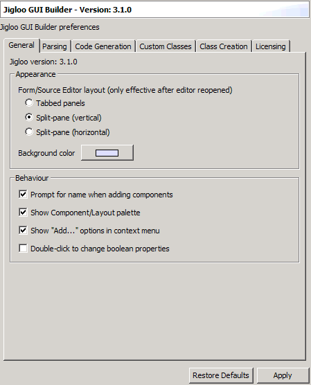
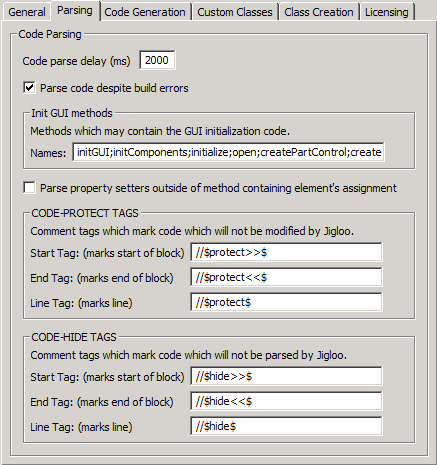
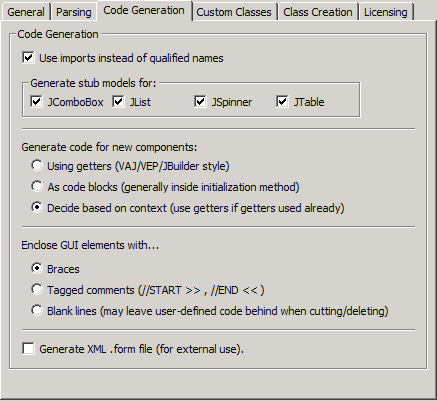
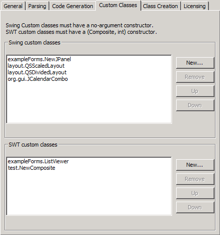
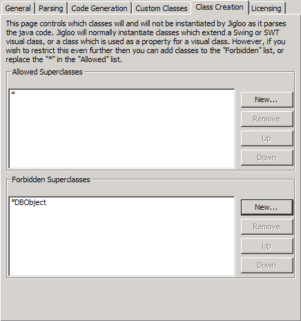
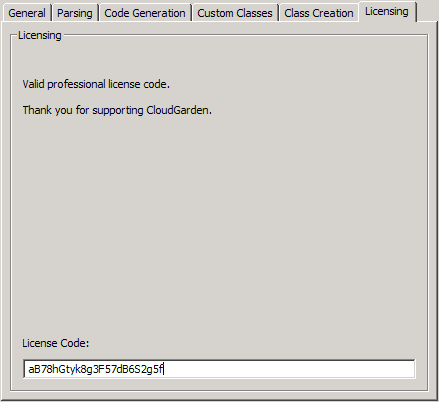

The Preferences Page
A lot of Jigloo's behaviour can be customized using a set of preference
pages, which are accessed by choosing the main menu option
"Window->Prefernces" and then selecting the "Jigloo GUI Builder"
option.
You should see the page below:
General
The first tab allows you to set the layout of the Form/Source editors, and the background color. It also allows you to change some of the general behaviour of Jigloo.

Code Parsing
The second tab controls the code parsing behaviour of Jigloo - the effect of these settings is described here.

Code Generation
The third tab controls the code generation. Please read this section on code-generation options.

Custom Classes
The fourth tab allows you to modify the classes appearing in the "Custom" tab of the Form editor's component palette.
Custom layout classes may be added here - they will be appended to the
end of the "Layouts" tab in the component palette. Other visual and
non-visual classes will appear in the "Custom" tab.

Class Instantiation
The fifth tab allows you to modify the classes which will be
instantiated as Jigloo parses your Java class for visual classes and
objects which are used as properties for visual classes. Note that Jigloo does not try to instantiate every class it finds - only visual classes and their property classes.
The default setting (a "*" in the "Allowed" list) allows all classes to
be made. You can restrict the allowed classes by replacing the asterisk
with a class-name pattern, where an asterisk in a pattern is a
wild-card. An
item in the "Allowed Classes" list will allow all classes which match the given pattern. It will
also allow any class which is an extension of any of those
classes. Therefore, "javax.swing.*" will allow any Swing class, and any class derived
from any Swing class. Similarly, you are able
to specify classes or packages which Jigloo will not be allowed to
instantiate, by populating the "Forbidden" list.
The point of this fine-grained selection of classes is so that if you
have certain non-visual classes which you do not wish to be created
while simply editing the code (perhaps they try to connect to a
database or write to a log file etc) then you can exclude them here,
while you may wish other non-visual classes to be instantiated by
Jigloo so you can edit their properties, or so that they may be used as
parameters for visual classes, say.
The parsing of Java code by Jigloo is described in more detail here.

Licensing
The last tab allows you to enter in your license code (if you have purchased a commercial license for Jigloo).
A valid license code will disable the automatic generation of a comment
block at the start of Jigloo-generated code which states the terms of
the non-commercial license to which you have agreed to abide.
It will also remove the "Non-commercial version of Jigloo" label which appears on the form editor.
